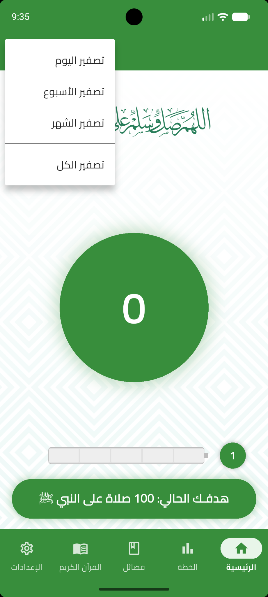
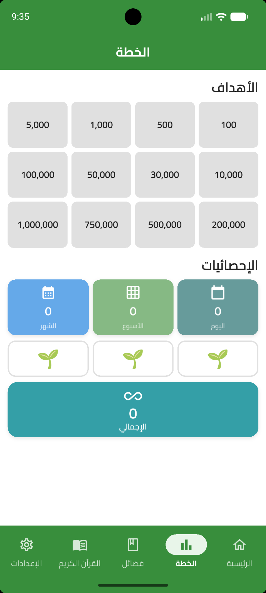
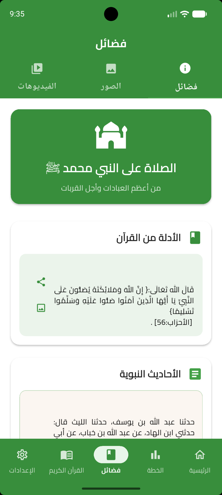
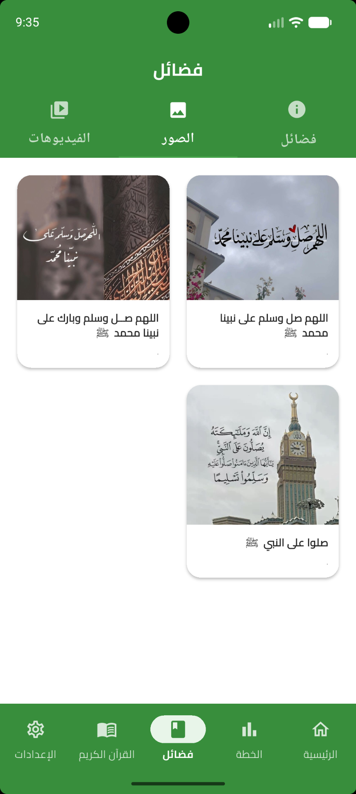
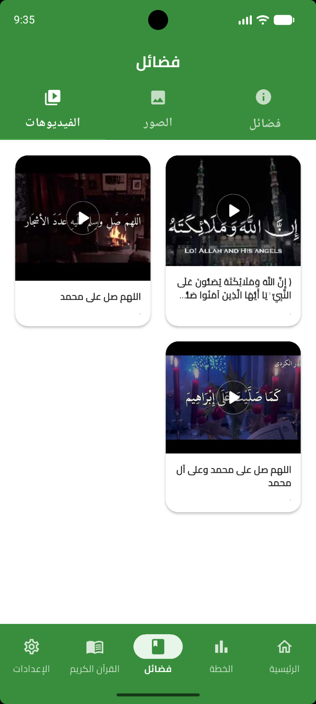
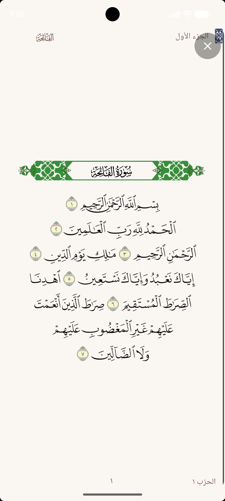
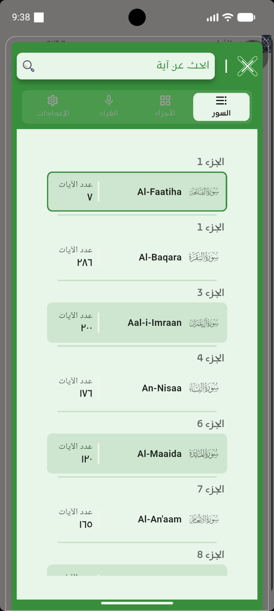
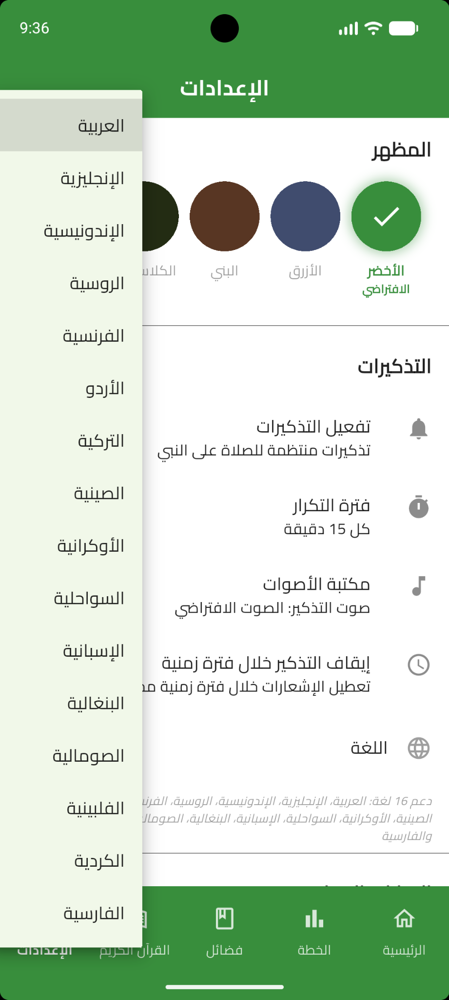
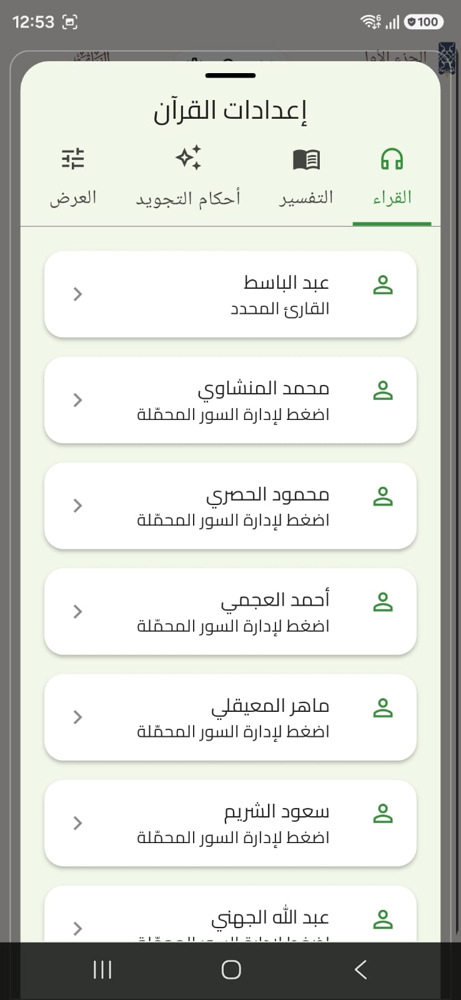
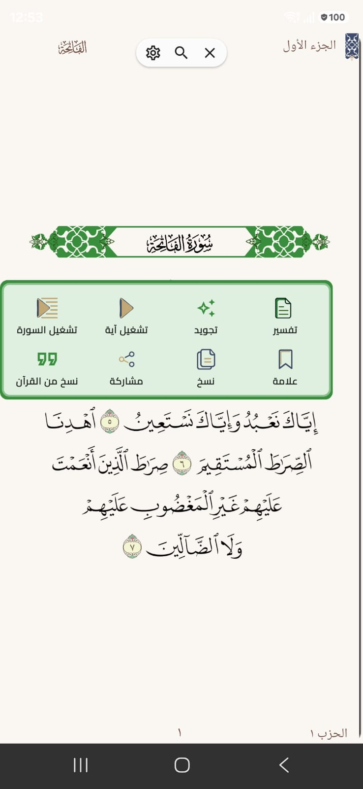

رفيقك الإيماني اليومي
صلِّ على المصطفى ﷺ
تطبيق إسلامي يجمع الصلاة والسلام على النبي محمد ﷺ، والقرآن الكريم، والأذكار، والتذكيرات والمحتوى الإيماني في تجربة سهلة ومتعددة اللغات.

كل ما تحتاجه في تجربة واحدة
أدوات ومحتوى إيماني صُممت للاستخدام اليومي.
🤲
عداد الصلاة على النبي ﷺ
تابع عدد مرات الصلاة والسلام على النبي ﷺ وحدد أهدافك اليومية.
📖
القرآن الكريم
قراءة واستماع وبحث وعلامات مرجعية وأدوات متعددة للاستفادة من القرآن الكريم.
🔔
التذكيرات
تذكيرات تساعدك على المداومة على الصلاة على النبي ﷺ.
❤️
الفضائل والمحتوى الإيماني
مواد عن فضائل الصلاة على النبي ﷺ ومحتوى إسلامي متنوع.
🎧
الصوت والصورة
استفد من التلاوات والصور والفيديوهات المتاحة داخل التطبيق.
🌍
16 لغة
واجهة متعددة اللغات لتسهيل استخدام التطبيق حول العالم.
اكتشف التطبيق
لقطات حقيقية من واجهات ومزايا التطبيق.









يدعم 16 لغة
ليصل المحتوى إلى مستخدمين من لغات وثقافات متعددة.
العربيةEnglishفارسیবাংলাBahasa IndonesiaРусскийFrançaisاردوTürkçe简体中文УкраїнськаKiswahiliEspañolSoomaaliFilipinoKurdî